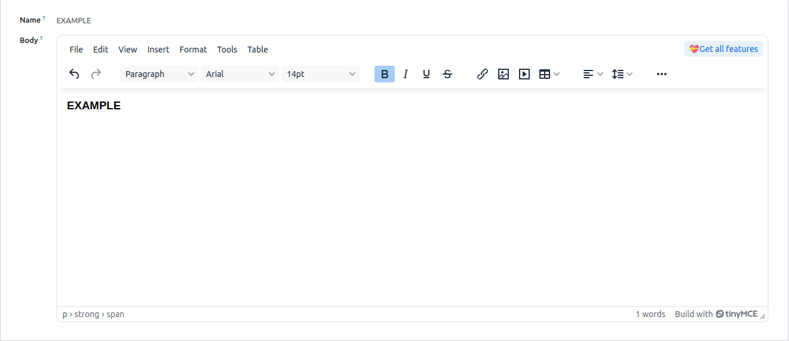
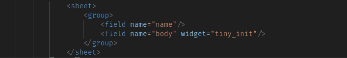

<section class="oe_container oe_dark" style="padding: 40px 20px; font-family: 'Segoe UI', sans-serif;">
  <div class="oe_row" style="max-width: 1000px; margin: 0 auto; background: #fff; border-radius: 10px; padding: 30px; box-shadow: 0 4px 10px rgba(0,0,0,0.1);">
    <div style="display: flex; justify-content: flex-end; align-items: center; padding: 10px 20px;">
      <span style="background-color: lightseagreen; padding: 6px 12px; border-radius: 20px; font-size: 14px; font-weight: bold; color: #333;">
        Community / Enterprise
      </span>
    </div>
    <div class="oe_span12">
      <h2 class="oe_slogan" style="text-align: center; font-size: 32px; color: #2e3c55;">Web TinyMCE Editor</h2>
      <h3 class="oe_slogan" style="text-align: center; font-size: 20px; color: black; font-weight: 400;">
        Enhance your HTML editing experience with TinyMCE in Odoo access all core HTML field functionalities along with additional advanced features.
      </h3>

      <hr style="margin: 30px 0; border: none; height: 1px; background: #ddd;" />

      <h4 class="oe_slogan" style="font-size: 22px; color: #30054d;">How to Use</h4>
      
      <div class="oe_screenshot" style="margin-top: 15px;">
        <ul style="list-style-type: disc; padding-left: 20px;">
          <li style="color: #30054d; font-weight: bold; margin-bottom: 10px;">
            As shown in the image below, the editor is defined using a basic HTML field or by setting the widget type to <code>'html'</code>.
          </li>
        </ul>
        
      </div>

      <div class="oe_screenshot" style="margin-top: 40px;">
        <ul style="list-style-type: disc; padding-left: 20px;">
          <li style="color: #30054d; font-weight: bold; margin-bottom: 10px;">
            To use the widget, insert the following code snippet into your module view. widget="tiny_init"
          </li>
        </ul>
        
      </div>
    </div>
  </div>
</section>
